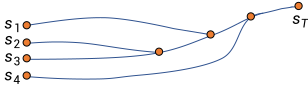

Your browser doesn't support the features required by impress.js, so you are presented with a simplified version of this presentation.
For the best experience please use the latest Chrome, Safari or Firefox browser.
Mid-Term Course Survey
- 18 students participated so far. As promised, each will receive 1 extra credit.
- Selected suggestions:
- Maybe have a pdf version of the slide before the lecture ...
- Some provided suggestions on tuning the parameters in some of the homework ...
- For some of the long math derivations, it would be helpful to have some sort of visual aid of what is being derived ...
- Provide more demos to sapien.
- more guest lecture (professor or senior student) if it is possible
- This is probably too novel, but I think a "flipped" instruction mode would do this class wonder.
- It would better to cover some material for collision checking in the future
- ...some of the material, such as the initial discussion of the three frames, it would take some time offline to truly appreciate the material...
L13: Framework of Reinforcement Learning (II)
Hao Su
(slides prepared with the help from Tongzhou Mu)
Spring, 2021
Agenda
click to jump to the section.
Optimal Policy and Optimal Value Function
Optimal Value Function
- Due to the Markovian property, the return starting from a state $s$ is independent of its history. Therefore, we can compare the return of all policies starting from $s$ and find the optimal one.
- The optimal state-value function $V^*(s)$ is the maximum value function over all policies
- $V^*(s)=\max_\pi V_\pi(s)$
- The optimal action-value function $Q_*(s,a)$ is the maximum action-value function over all policies
- $Q^*(s,a)=\max_\pi Q_\pi(s,a)$
- The optimal value function specifies the best possible performance in the MDP.
Optimal Policy
- Define a partial ordering over policies
\[
\pi\ge\pi'\mbox{ if }V_\pi(s)\ge V_{\pi'}(s), \forall s
\]
Theorem: For any Markov Decision Process
- There exists an optimal policy $\pi_*$ that is better than, or equal to, all other policies, $\pi_*\ge\pi,~\forall\pi$
- All optimal policies achieve the optimal value function, $V_{\pi^*}(s)=V^*(s)$
- All optimal policies achieve the optimal action-value function, $Q_{\pi^*}(s,a)=Q^*(s,a)$
- An optimal policy can be found by maximizing over $Q^*(s,a)$,
\[
\pi^*(a|s)=
\begin{cases}
1, & \text{if}~~a=\text{argmax}_{a\in\mc{A}}~Q^*(s,a) \\
0, & \text{otherwise}
\end{cases}
\]
Bellman Optimality Equation
- Optimal value functions also satisfy recursive relationships
\[
\begin{aligned}
V^*(s)
& = \max_a\bb{E}_{\pi_*}[G_t|S_t=s, A_t=a] \\
& = \max_a\bb{E}_{\pi_*}[R_{t+1}+\gamma G_{t+1}|S_t=s, A_t=a] \\
& = \max_a\bb{E}[R_{t+1}+\gamma V^*(S_{t+1})|S_t=s, A_t=a] \\
\end{aligned}
\]
- Similarly, for action-value function, we have
\[
Q^*(s,a)=\bb{E}[R_{t+1}+\gamma \max_{a'}Q^*(S_{t+1}, a')|S_t=s, A_t=a]
\]
- They are called Bellman Optimality Equations
Solving the Bellman Optimality Equation
- Bellman Optimality Equation is non-linear (because there is the max operation).
- No closed form solution (in general)
- Many iterative solution methods:
- Value Iteration
- Policy Iteration
- Q-learning (we will talk about this later)
- SARSA
Estimating Value Function for a Given Policy
Goal: Given a policy $\pi(a|s)$, estimate the value of the policy.
Monte-Carlo Policy Evaluation
- Basic idea: MC uses the simplest possible idea: value = mean return
- Learn $V_\pi$ from $K$ episodes under policy $\pi$
- $\{S_{k,0}, A_{k,0}, R_{k,1}, ..., S_{k,T}\}_{k=1}^K\sim\pi$
- Recall that the return is the total discounted reward:
- $G_t=R_{t+1}+\gamma R_{t+2}+...+\gamma^{T-t-1}R_T$
- Recall that the value function is the expected return:
- $V_\pi(s)=\bb{E}_\pi[G_t|S_t=s]$
Monte-Carlo Policy Evaluation
- Suppose that we have collected a number of trajectories. Monte-Carlo policy evaluation uses empirical mean return to approximate expected return
- For each episode:
- For each time step $t$:
- Compute empirical return $G_t$ from the current state $s$
- Increment total return $S(s) \leftarrow S(s) + G_t$
- Increment state visit counter $N(s) \leftarrow N(s) + 1$
- Value is estimated by mean return $V(s)=S(s)/N(s)$
Monte-Carlo Methods
- Quick facts:
- MC is unbiased (average of the empirical return is the true return)
- MC methods learn directly from episodes of experience
- MC is model-free: no knowledge of MDP transitions / rewards
- Caveat: can only apply MC to episodic MDPs
- All episodes must terminate
Temporal-Difference Learning
- Basic idea: TD leverages Bellman expectation equation to update the value function.
\[
V_{\pi}(s)= \bb{E}_{\pi}[R_{t+1}+\gamma V_{\pi}(S_{t+1})|S_t=s]
\]
Temporal-Difference Learning
\[
V_{\pi}(s)= \bb{E}_{\pi}[R_{t+1}+\gamma V_{\pi}(S_{t+1})|S_t=s]
\]
- Learn $V_\pi$ from $K$ episodes under policy $\pi$
- $\{S_{k,0}, A_{k,0}, R_{k,1}, ..., S_{k,T}\}_{k=1}^K\sim\pi$
- Simplest temporal-difference learning algorithm: TD(0)
- Loop for a new iterations:
- Sample $(S_t, A_t, R_{t+1}, S_{t+1})$ with replacement from the transitions in the episodes
- Update value $V(S_t)$ toward estimated return $\color{red}{R_{t+1}+\gamma V(S_{t+1})}$:
- $V(S_t) \leftarrow V(S_t) + \alpha(\color{red}{R_{t+1}+\gamma V(S_{t+1})}-V(S_t))$
- $R_{t+1}+\gamma V(S_{t+1})$ is called the TD target
- $\delta_t=R_{t+1}+\gamma V(S_{t+1})-V(S_t)$ is called the TD error
- If we expand one step further, we got TD(1)
- $V(S_t) \leftarrow V(S_t) + \alpha(R_{t+1}+\gamma R_{t+1} + \gamma^2 V(S_{t+2})-V(S_t))$
- Similarly, we can have TD(2), TD(3), ...
Temporal-Difference Learning
- Quick facts:
- TD methods learn directly from episodes of experience
- TD is model-free: no knowledge of MDP transitions / rewards
- TD learns from incomplete episodes, by bootstrapping
- TD updates a guess towards a guess
Key Differences between MC and TD
- MC estimates values based on rollout
- TD estimates values based on Bellman equation
Pros and Cons of MC vs. TD

- TD can learn before knowing the final outcome
- MC must wait until the end of episodes
- TD can learn online after every step
Pros and Cons of MC vs. TD
- TD can learn without the final outcome
- MC can only learn from complete sequences
- When some episodes are incomplete, TD can still learn
- MC only works for episodic (terminating) environments
- TD works in non-terminating environments
Bias/Variance Trade-Off
- Return $G_t=R_{t+1}+\gamma R_{t+2}+...+\gamma^{T-t-1}R_T$ is always an unbiased estimate of $V_\pi(S_t)$
- The true TD target $R_{t+1}+\gamma V_\pi(S_{t+1})$ is an unbiased estimate of $V_\pi(S_t)$
- If we will update $\pi$ slowly along the learning process,
- the TD target $R_{t+1}+\gamma V(S_{t+1})$ becomes a biased estimate of $V_\pi(S_t)$, because
- $V(S_{t+1})$ is a return estimation from the previous $\pi$.
- However, the TD target also has much lower variance than the return $G_t$, because
- the return $G_t$ is from a single rollout, heavily affected by the randomness (actions, transitions, and rewards) in all the future steps;
- whereas the TD target is affected by the randomness in the next one step, and the low variance of the $V(S_{t+1})$ estimation from many historical rollouts.
Pros and Cons of MC vs TD (2)
- MC has high variance, zero bias
- Good convergence properties (even with function approximation)
- Independent of the initial value of $V$
- Very simple to understand and use
- TD has low variance, some bias
- Usually more efficient than MC
- TD(0) converges to $V_\pi(s)$ (but not always with function approximation)
- Has certain dependency on the initial value of $V$
Bellman, or no Bellman, that is the question
- Monte-Carlo sampling and Bellman equation are two fundamental tools of value estimation for policies.
- Each has its pros and cons.
- Based on them, there are two families of model-free RL algorithms, both well developed.
Some algorithms leverage both.
- Fundamentally, it is about the balance between bias and variance (sample complexity).
We start from REINFORCE and Deep Q-Learning
- Reason I:
- REINFORCE uses Monte-Carlo sampling
- Deep Q-Learning (DQN) uses Bellman equation
- Reason II:
- REINFORCE only has a policy network
- DQN only has a value network
Taxonomy of RL Algorithms and Examples
graph TD
l1("RL Algorithms")
l11("Model-Free RL")
l12("Model-Based RL")
l111("MC Sampling
")
l112("Bellman based
")
l121("Learn the Model")
l122("Given the Model")
l1111("REINFORCE")
l1121("Deep Q-Network")
l1-->l11
l1-->l12
l11-->l111
l11-->l112
l12-->l121
l12-->l122
l111-->l1111
l112-->l1121
style l11 fill:#eadfa4
style l111 fill:#eadfa4
style l112 fill:#eadfa4
style l1111 fill:#eadfa4
style l1121 fill:#eadfa4
Q-Learning for Tabular RL
Tabular RL: RL with discrete and finite state space, convenient for algorithm development and convergence analysis
The Anatomy of an RL algorithm
CS285 taught at UC Berkeley by Prof. Sergey Levine.
-
Suppose we are going to learn the Q-function. Let us follow the previous flow chart and answer three questions:
- Given transitions $\{(s,a,s',r)\}$ from some trajectories, how to improve the current Q-function?
- By Temporal Difference learning, the update target for $Q(S,A)$ is
- $R+\gamma\max_a Q(S', a)$
- Take a small step towards the target
- $Q(S,A)\leftarrow Q(S,A)+\alpha[R+\gamma\max_a Q(S', a)-Q(S,A)]$
- Given $Q$, how to improve policy?
- Take the greedy policy based on the current $Q$
- $\pi(s)=\text{argmax}_a Q(s,a)$
- Given $\pi$, how to generate trajectories?
- Simply run the greedy policy in the environment.
- Any issues?
Failure Example
- Initialize Q
- $Q(s_0,a_1)=0,Q(s_0,a_2)=0$
- $\pi(s_0)=a_1$
- Iteration 1: take $a_1$ and update $Q$
- $Q(s_0,a_1)=1,Q(s_0,a_2)=0$
- $\pi(s_0)=a_1$
- Iteration 2: take $a_1$ and update $Q$
- $Q(s_0,a_1)=1,Q(s_0,a_2)=0$
- $\pi(s_0)=a_1$
- ...
- $Q$ stops to improve because the agent is too greedy!
$\epsilon$-Greedy Exploration
- The simplest and most effective idea for ensuring continual exploration
- With probability $1-\epsilon$ choose the greedy action
- With probability $\epsilon$ choose an action at random
- All $m$ actions should be tried with non-zero probability
- Formally,
\[
\pi_*(a|s)=
\begin{cases}
\epsilon/m + 1-\epsilon, & \text{if}~~a=\text{argmax}_{a\in\mc{A}}~Q(s,a) \\
\epsilon/m, & \text{otherwise}
\end{cases}
\]
Exploration vs Exploitation
- Exploration
- finds more information about the environment
- may waste some time
- Exploitation
- exploits known information to maximize reward
- may miss potential better policy
- Balancing exploration and exploitation is a key problem of RL. We use will spend a lecture to discuss advanced exploration strategies.

Running Q-learning on Maze